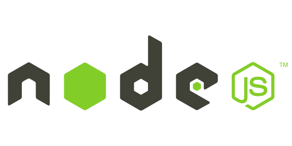
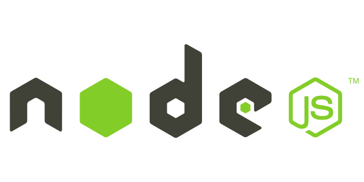

Mario Chiaparini
I'm
About
Hello There !
My name is Mario Chiaparini. I hold a degree in Chemical Engineering and am currently pursuing a second degree in Electrical and Computer Engineering to expand my expertise in technologies I've worked with in my previous jobs.
I worked in data science and bioinformatics at Genera, a biotechnology company, where I collaborated with various R&D teams handling genetic data. My first job was at a technology company born from scientific entrepreneurship, where I worked with professors specializing in artificial intelligence. This led to an opportunity at CNPEM, where I was part of the scientific computing group.
In my second job, I built computational artificial neural networks to replace the Columbus software, aimed at counting microorganisms in bio photonics assay images. Additionally, I developed Ansible playbooks and adapted to high-performance computer networks at the particle accelerator, processing large amounts of experimental data.
Currently, I work in battery informatics, funded by TotalEnergies and in collaboration with CARISSMA in Germany. At the Center for Innovation of New Energies, I developed a recurrent neural network with bidirectional LSTM units to predict battery health, providing prognostics for second-life implementation and potential failures.
Throughout my computational experience, artificial intelligence has been a common thread. I am currently studying generative models extensively, particularly through a course by Professor Roberto Lotufo, CTO of NeuralMind, focusing on the fundamentals of natural language processing models.
- Birthday: 29 September 1999
- Phone: +55 11945262188
- City: Indaiatuba, São Paulo
- Email: mariochiaparin@gmail.com
Interests
Signal Processing
Computer Vision
Deep Learning
Generative Models
Battery Informatics
Data analysis
Machine learning
Data Science
University
Universidade Estadual de Campinas
Eletrical Engineering
January 2023 - Present
Relevant Coursework
- Hardware Desing - PCB
- Circuit Analysis
- Eletromagnetism
Pontificia Universidade Católica
Chemical Engineering
January 2018 - December 2022
Relevant Coursework
- Mass Transfer
- Momentum Transfer
- Heat Transfer
Experience
Center for Innovation in New Energies, CINE
Jan 2023 - Present
Associate Researcher
- Worked at the Center for Innovation in New Energies, focusing on the battery informatics R&D team from Total Energies.
- Within the battery informatics segment, I worked in both hardware and software sections.
- In the software section, I worked on hardware development for battery management systems and signal acquisition.
- In addition to the hardware application for batteries, I have projects involving the development of supercapacitor chargers.
- Software development is primarily focused on signal processing, with the main application in health state prediction based on recurrent neural networks.
- In addition to health state prediction, I developed a convolutional network to define the health state up to the second life region of batteries, through a signal transformation stage such as the Gramian Angular Field differentiation and summation.
- In addition to data-driven methods applied to battery informatics, I developed a single-particle and Doyle-Fuller-Newman models that simulated the electrochemical systems from the batteries computationally.
Center of research in Materials and Energy, CNPEM
Jan 2022 - Jan 2023
Scientific computing intern
- Tested the convolutional neural networks (Deep learning models) to find and count patogenic microorganisms inside of synthetic human cells. The data was generated from high throughput screening experiments, to find new pharmaceuticals for Chagas disease.
- Deployed a deep learning model on a pipeline from Cellprofiler that have the exactly same functions as the lincesed software (Columbus), which saved 70 thousand dollars for the research group. Turning pharmaceutical discoverying, for new tropical diseases, cheapier to research in Brazil and any other south american country.
- I developed other convolutional neural networks which the input data was from synthetic human neural networks synapses.
- Designed a pipeline with Cellprofiler and Ilastik segmentation model, that followed the tumorous cells growth. Saving the time for researchers, that studied hit molecules for all types of cancer cells.
- Developed python macros to perform molecular docking simulations, using the lincesed software called Yasara. I built these scripts to turn the process of molecular docking in Yasara easier.
- Built and tested Singularity and Docker images for molecular dynamics and molecular docking tools to be deployed on the HPC cluster.
- Developed scipts in bash for LAMMPS, Quantum Espresso and Gromacs, for the simulation data generated from the particle accelerator clusters.
- Handled with Ansible playbooks to install the enviroments to update each node, from the particle accelerator clusters of CPU and GPU.
- Worked with OpenCL, Mosix and Popcorn Linux to create an application for the syncrotron accelerator, a descentralized CPU cloud. Where I take every type of CPU on the particle accelerator, connected with each of the CPUs from the beamlines, with Mosix(OpenVCl) and VM interface created with Popcorn Linux
- Created the Linux clusters enviroment of processing, by installing Slurm for a parallel job execution and installing all the containers.The cluster named as "Tars" was for test application, which got only 3 nodes of CPU for some molecular models testing.
Center of research in Materials and Energy, CNPEM
Jun 2022 - Aug 2022
Summer internship - Syncrotron Diffraction
- Tested ferromagnetic samples for the Particle accelerator experiments, to study it baheaviour computationally.
- Participated from crystallographic practices for biomolecules structure predictions.
- Handled with the XPS synchrotron difraction data, for the surface composition analysis.
- Developed computer transistors samples with 2D materials (Graphene).
Genera Laboratories
Aug 2021 - Jan 2022
Bioinformatics intern
- Bioinformatics tools for biological data analysis.
- Built a Hidden-Markov chain model to phase and impute the missing data from DNA, which imputed the SNPs from Illumina to thermoFisher.
- Tested bioinformatics tools for DNA data processing, with Plink and Lineage.
- Designed a pipeline to process the genetic data, to phase and impute the SNPS from each chip. Using the tools like MendelImpute.jl and Beagle, which was implemented on the AWS cloud.
- Developed a Python code to use VCTools and BCFTools to find genetic variants for the R&D group of the company.
Genera Laboratories
Mar 2021 - Aug 2021
Data science intern
- Developed machine learning models
- Bioinformatics pipelines with Cellprofiler
- Build databases in PSQL and MySQL for the bioinformatics workflow
- Dbeaver for database management
- Optimized the data processing from the DNA sequencing chips (Illumina vs ThermoFisher) to find "indels"
- Handled with the data analysis from the client's heritage, giving the ancestry map from brazilians by each province
Projects
- All
- Computational Intelligence
- Computer Simulation
- Other


Skills
Languages and Databases


Packages


Tools


 
